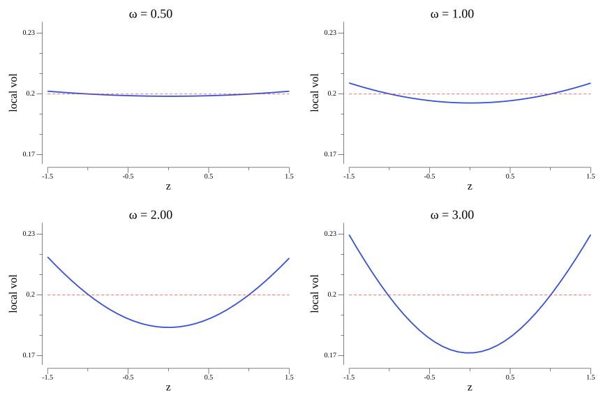
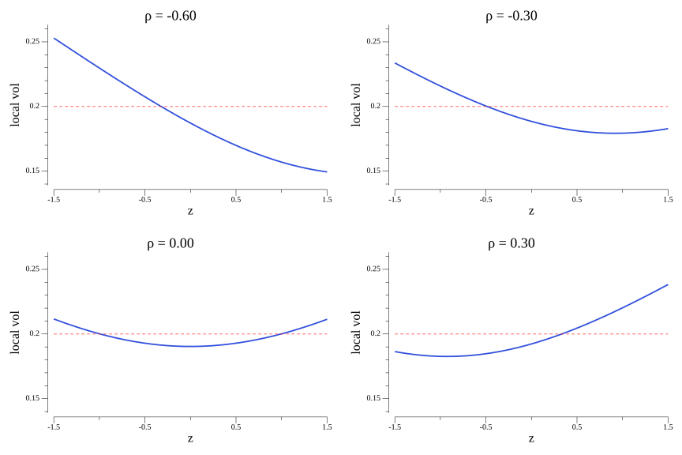
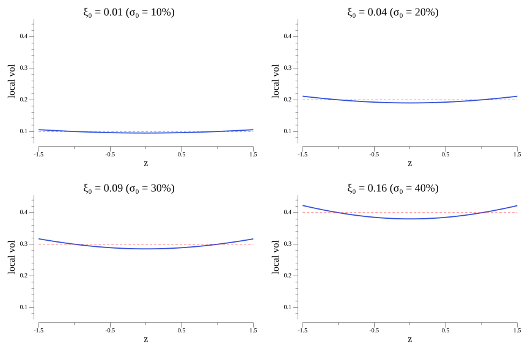
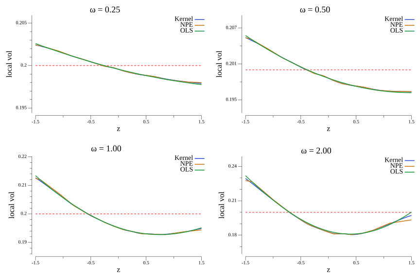
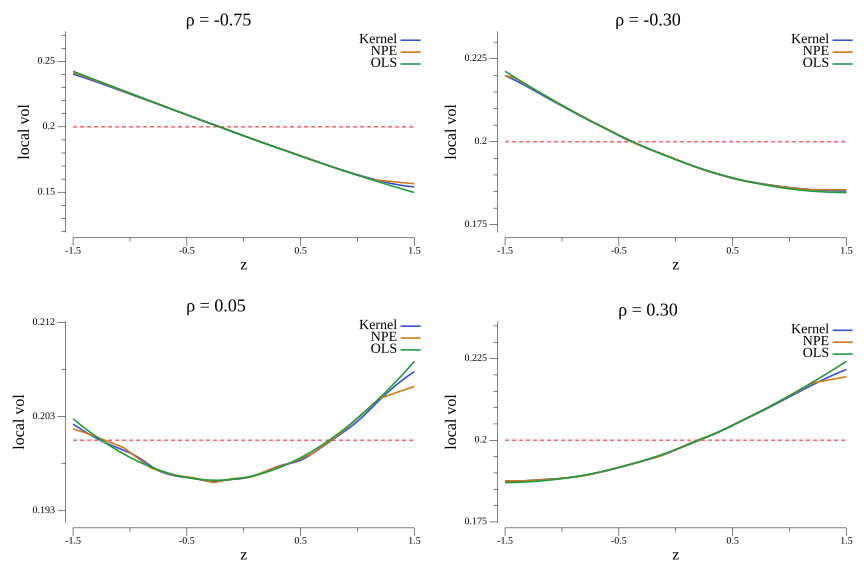
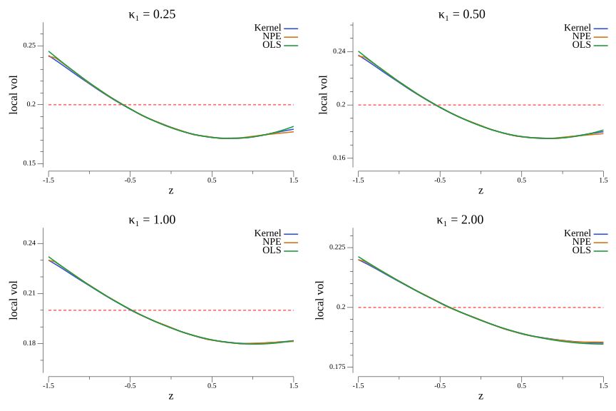
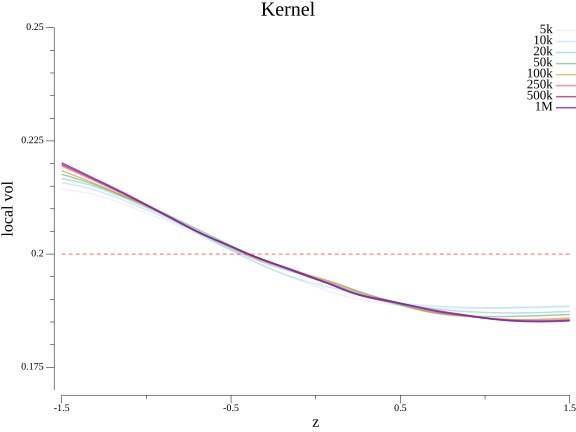
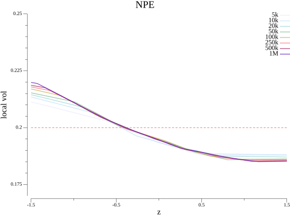
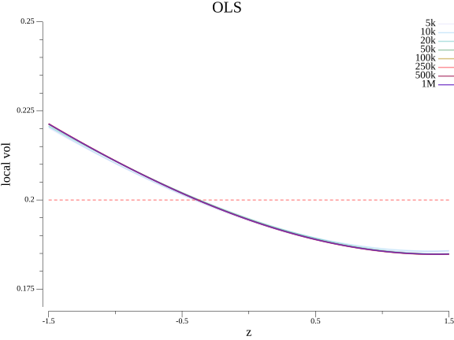

May: estimating the Dupiré--Gyöngy term
The Dupire--Gyöngy condition states that any stochastic volatility model
is mimicked by a local volatility model whose squared local volatility
function is equal to the expected value of instantaneous variance
conditional on spot. Calibrating such a model therefore requires
estimating $\mathbb{E}(\sigma(T)^2 \mid Q(T) = K)$ from Monte Carlo paths.
In this post, we compare three estimators for this conditional expectation
in a one-factor stochastic volatility Bergomi model
[1, 2]: an OLS polynomial
regression, a Gaussian kernel estimator, and a quantile-bin non-parametric
estimator (NPE) with linear interpolation.
To compare them and get some intuition of the Bergomi model, we examine how
volatility-of-volatility $\omega$, spot-volatility correlation $\rho$ and
initial forward variance $\xi_0$ shape the local-volatility smile, and
study the convergence of each method as the Monte Carlo sample size grows
from 5,000 to 1,000,000 paths.
1. Setup and problem statement
Let us consider a pure stochastic volatility model for spot, of the form
$$ \frac{dQ(t)}{Q(t)} = \sigma(t) dW(t) $$ where $\sigma(t)$ is itself
stochastic, and we assume zero rates or dividends. For example, we can
consider a one factor Bergomi model [1, 2],
driven by a single process with mean reversion
$$dx(t) = -\kappa x(t)dt + dZ(t); \quad x(0) = 0$$
where variance is equal to
$$v(t) = \xi^0(t)\exp\left(\omega x(t)
- \dfrac{\omega^2}{2} \dfrac{1 - e^{-2\kappa t}}{2\kappa}\right)$$
where $\xi_0(t)$ is the prevailing forward variance curve
and $v(t) = \sigma(t)^2$. Note that the exponential term is
the variance of $x(t)$. It is well known that if we were to
replace the model dynamics by a local volatility model
$$
\frac{dQ(t)}{Q(t)} = \sigma_0(t,Q(t) ) dW(t),
$$
we must have for all $(t,K)$ that
$$\mathbb E(\sigma(t)^2 \mid Q(t) = K) = \sigma_0(t,K)^2.$$
This is the Dupire--Gyöngy condition [3, 5].
Since we can compute the right hand side from market quotes, we can attempt
to calibrate the Bergomi model to try and hit the market as best as
possible. So how can this be done? Obviously, this requires the computation
of the conditional expectation above for a relatively dense grid of liquid
strikes and maturities, which can be computationally intensive. In the
following sections we will review some methods to do this.
Let us fix a maturity $T$ and sample the log-spot and variance to get the
dataset of pairs $\{ (s_i, v_i) : i \in [N] \}$ from $N$ simulated paths,
where $s_i = \log Q_i(T)$ and $v_i = \sigma_i(T)^2$. The Gyöngy
condition requires us to estimate the function
$$g(s) = \mathbb{E}(v \mid \log Q(T) = s)$$
at a sufficiently dense grid of log-strike values $s = \log K$; the local volatility
is then computed as $\sigma_0(T,K) = \sqrt{g(\log K)}$. All three methods described
below produce an estimate $\hat g$ of this function from the same simulated
sample.
2. Parametric estimators
The simplest approach is to model $g(s)$ in terms of some basis functions.
Since we know that volatility is roughly U-shaped, it is reasonable to
consider polynomial approximations. We thus consider
$$\hat{g}(\tilde s) = \sum_{j=0}^{d} c_j\, P_j(\tilde s)$$
where $P_0, \ldots, P_d$ are some polynomials indexed by their degree
is the polynomial degree. Since the resulting matrix for the OLS regression
is only $(d+1)\times(d+1)$ regardless of $N$, inverting
it costs $O(d^3)$ and the dominant work is the $O(Nd)$ pass to populate
$\Phi$. The resulting estimate is smooth, but a polynomial may not capture
more complex curvature profiles, and can introduce bias in the estimation.
However, other bases can be considered that may be more appropriate given
the observed shape of the local volatility produced by the model
[6].
3. Kernel estimators
The Nadaraya--Watson estimator [7, 11]
replaces a global polynomial with a weighted local average, so that the
final value of $\hat g$ is an aggregate of "smoothed deltas" at each sampled
point $s_i$. At each query point $s$, we then define
$$\hat g_h(s) =
\frac{\displaystyle\sum_{i=1}^N K_h(s - s_i)\,v_i}
{\displaystyle\sum_{i=1}^N K_h(s - s_i)},
\qquad
K_h(u) = h^{-1}\,\varphi\left(h^{-1}{u}\right)$$
where $\varphi$ is the standard normal density. Each variance sample $v_i$
receives a weight proportional to how close $s_i$ is to $s$. The estimator
is consistent for any smooth $g$ and requires only the choice of a bandwidth
$h > 0$, which will not concern us too much here. Roughly speaking, smaller
bandwidths will produce a rougher profile and may overfit, while large
bandwidths may introduce bias. Thus, a good bandwidth choice will balance
these two sources of error and minimise the mean squared error of the estimate
[10].
Silverman's rule. One option is to go by Silverman's rule
[9], which proposes a bandwidth of
$h = 1.06\,\hat\sigma\, N^{-1/5}$ where $\hat\sigma$ is the sample standard
deviation of $\log Q(T)$. The rule minimises the asymptotic mean integrated
squared error under a Gaussian model for $g$, and performs well when the
log-spot is approximately normally distributed, as in our case.
4. Non-parametric estimators
A third approach partitions the data into bins, averages $v$ within each one
and thus estimates the conditional expectation in a naive way. To do so, we
divide the samples into quantile bins and compute the sample mean over each.
For a query point $s$ falling between two midpoints of adjacent bins, we can
then estimate $\hat g$ using a linear interpolation along the two pre-computed
means, to obtain a more smooth profile than the piece-wise flat profile one
would obtain without this.
Unlike the kernel estimator, this makes no smoothness assumption on $g$
and requires no bandwidth selection, although it does require us to choose
how many bins we will use in the process; for the bin count one may follow Scott's
$N^{1/3}$ rule [8]. Its main limitation is the
piecewise-linear form of the interpolant, which can appear rough when the
within-bin variance of $v$ is large, such as high vol-of-vol regimes.
5. Effect of $ω$, $ρ$ and $ξ_0$ on the local volatility smile
Let us now use the three estimators above to compute the local volatility
smile of the two-factor Bergomi model [1, 2],
and see how the vol-of-vol, correlation and initial forward curve act as
smile, skew and level parameters.
In the figure below, we show the resulting OLS estimates of the Bergomi
local-volatility smile at $T=1$ as we vary three parameters one at a time, holding
the others fixed at $\omega=1.5$, $\rho_1=\rho_2=0$, $\xi_0=4\%$,
$\kappa_1=5$, $\kappa_2=0.5$, $\theta=0.5$, $\rho_{12}=0$. The dashed line
marks the flat-variance reference $\sigma_0 = \sqrt{\xi_0}$ for each panel.

Figure 1. Larger $\omega$ increases the convexity of the smile.
Thus $\omega$ acts as a smile parameter in the Bergomi model, controlling
the size of the tails (kurtosis) of the log-spot distribution.

Figure 2. The spot-vol correlation $\rho$ controls the slope of
the local-vol smile: negative $\rho$ produces negative slope, positive
$\rho$ reverses it. In other words, $\rho$ controls the skew of the
log-spot distribution.

Figure 3. Changing $\xi_0$ shifts the entire smile up or down,
impacting mostly the level of the local volatility.
6. Comparison of estimators
The figures below overlay all three estimators, one 2×2 grid per swept
parameter. We have used $N=1 000 000$ paths for every panel.

Figure 4. Kernel (blue), NPE (amber) and OLS (green) estimates of the
local-vol smile as $\omega$ varies. All estimators are approximately equal,
with the kernel and NPE exhibiting some Monte Carlo noise. Note also that the
OLS estimator introduces some bias (calibration mismatch) when $\omega$ is
too large.

Figure 5. Same comparison for varying spot-vol correlation $\rho$.
As before, estimators are approximately equal, with the kernel and NPE exhibiting some Monte Carlo noise.

Figure 7. Same comparison for varying slow mean-reversion speed $\kappa_2$. Just like
$\theta$, the impact on local-volatility is small compared to the other three parameters.
The three methods agree reasonably well at moderate parameters, though the
NPE curve can become visibly rough for certain parameters (e.g. large mean
reversion, high vol-of-vol and/or zero correlation). Of course, the OLS fit
stays smooth by construction, possibly at the cost of some small bias.
Finally, the kernel provides a compromise between the two: it is smooth and
unbiased, but does carry over some of the Monte Carlo noise at high
vol-of-vol.
7. Convergence with sample size
The figure below fixes the base parameters ($\omega=100\%$, $\rho=-30\%$,
$\xi_0=0.04$) and shows the convergence of the estimators
through eight sample sizes,
from $N=5\,000$ (lightest) to $N=1\,000\,000$. Each run is an
independent Monte Carlo draw; the dashed line marks the flat-volatility
reference of $\sigma_0 = 20\%$.

Figure 8. Kernel estimator curves for $N$ from 5k (lightest) to
1M (purple). The kernel estimator gives a very good estimate of the
local-volatility smile.

Figure 9. NPE estimator curves for $N$ from 5000 (gray) to 1
million (purple). The NPE estimator still preserves some of the Monte
Carlo noise but otherwise produces a good estimate that is stable at
around 100000 samples.

Figure 10. OLS estimator curves for $N$ from 5000 (gray) to 1
million (purple). Compared to the other estimators, the OLS estimator
stabilizes relatively quickly.
The kernel and OLS estimates are visually stable already around
$N=100\,000$: the curves at 100k, 250k, 500k and 1M are nearly
indistinguishable. The NPE requires a somewhat larger sample before the
piecewise-linear interpolant settles at the wings, so the resolution of the
NPE curve improves more slowly than the Monte Carlo noise of the individual
bin means. At low number of samples, the kernel estimator and NPE show
lack of convergence around the wings, which is expected due to the way
the bins become denser as the number of samples increased and are able to
capture extreme sample points.
References
-
Bergomi, L. (2005), “Smile Dynamics II,” Risk, October, 67–73.
-
Bergomi, L. (2016), Stochastic Volatility Modeling, CRC Press,
Boca Raton.
-
Dupire, B. (1994), “Pricing with a Smile,” Risk, 7(1), 18–20.
-
Gyöngy, I. (1986), "Mimicking the One-Dimensional Marginal Distributions
of Processes Having an Ito Differential," Probability Theory and
Related Fields, 71, 501–516.
-
Longstaff, F. A. and Schwartz, E. S. (2001), "Valuing American Options
by Simulation: A Simple Least-Squares Approach," The Review of
Financial Studies, 14(1), 113–147.
-
Nadaraya, E. A. (1964), "On Estimating Regression," Theory of
Probability and Its Applications, 9(1), 141–142.
-
Scott, D. W. (1979), "On Optimal and Data-Based Histograms,"
Biometrika, 66(3), 605–610.
-
Silverman, B. W. (1986), Density Estimation for Statistics and Data
Analysis, Chapman & Hall/CRC, London.
-
Wand, M. P. (1994), "Fast Computation of Multivariate Kernel
Estimators," Journal of Computational and Graphical Statistics,
3(4), 433–445.
-
Watson, G. S. (1964), "Smooth Regression Analysis," Sankhyā:
The Indian Journal of Statistics, Series A, 26(4), 359–372.